|
|
| flatworms text index | photo index |
| worms > Phylum Platyhelminthes > Class Turbellaria > Order Polycladida |
| Marine
flatworms Order Polycladida updated Feb 2020
Where seen? Marine flatworms are ferocious predators that glide around the shores like liquid death. They are common on all our shores. Ranging from tiny ones found under rocks to larger monsters that roam out in the open. Some are brightly coloured and patterned, others blend with their surroundings. Flatworms are usually more active when it is dark when they skim the ground with elegant ruffles of their body edges, or even swim short distances in the water. What are flatworms? Unlike bristleworms and earthworms which are segmented and belong to Phylum Annelida, flatworms are unsegmented worms belonging to the Phylum Platyhelminthes. 'Platyhelminthes' means 'flat worm'. There are about 18,500 species of flatworms, but only about 16% of these are free-living flatworms. Most members of this Phylum are internal parasites. These infest fish and other animals including humans; such as tapeworms and liver flukes. Marine flatworms belonging to the Order Polycladida, however, are not parasites. They are free-living flatworms that earn an honest living by hunting down and eating other animals. Sometimes confused with: nudibranchs and slugs. More on how to tell them apart. Features: Most are about 1cm long or less, although some 'monster' species 8-10cm long are also commonly seen. There are also countless minute free-living flatworms that live among sand grains. These flatworms stick onto the sand grains with paired glands on their underside. One gland secretes a glue, and the other gland another substance to release the glue. Flatworms are generally oval or leaf-shaped, some have highly ruffled edges. Some flatworms have tiny tentacles over their heads. Most of the commonly seen flatworms only have pseudotentacles on their heads, a pair of tiny ear-like structures made out of folded edges of their bodies. They are not real tentacles like those of a snail. Liquid Death: Flatworms really very very flat. Usually less than 1mm thick! Being flat has its advantages. They can get into almost every kind of space: to hide or to get at their food. (see below for how some eat clams). Oxygen diffuses quickly across the skin and to all parts of the body. So a flatworm doesn't have a blood circulatory or respiratory system. Nutrients also quickly diffuse from the central gut to the rest of the body, although larger flatworms may have a highly branched digestive system to bring food to the furthest reaches of the body. 'Polyclad' means 'many branches' referring to their branched digestive system. Worm Slurpee: Being flat means most flatworms can't swallow their prey. Instead, the pharynx (a part of the gut) is pushed out through the mouth. The pharynx engulfs the prey outside the worm's body. Or digestive juices are injected into the prey and the resulting liquefied meal is then sucked up. Most flatworms don't have an anus and they spit out indigestible bits through the mouth. The mouth of a flatworm is on the underside of the body, in some, towards the centre or the back end of the body. The skin of a flatworm is covered with cilia (tiny beating hairs). The swirling of their constantly beating cilia gives their group name 'Turbellaria' which means 'whirpool'. In bigger flatworms, the cilia are often only found on the underside. They also produce mucus that protects them from drying out or perhaps as protection from predators. Flatworms have a central nervous system and a simple brain to co-ordinate their well developed muscular system. Rainbow Worms: Flatworms come in a bewildering variety of colours and patterns. Some of these colours are due to the colour of the prey they have eaten, showing through their gut. Those with bright colours that contrast with their surroundings probably serve as a warning of their distasteful nature. Flatworms can contain powerful toxins. Others have colours and patterns that blend with the background. These and smaller ones are simply overlooked. Some flatworms mimic other animals such as nudibranchs (or perhaps visa versa). |
 Some may be colourfully patterned. St John's Island, Nov 12 |
 Some may be nearly transparent! Sisters Island, Feb 10 |
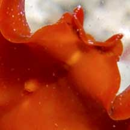 Pseudo tentacles made out folded edges of the body margin. Mouth is on the underside. Pulau Sekudu, Jul 05 |
| What do they eat? Many flatworms
are carnivores that prey on tiny animals (protozoa, copepods, worms)
or feed on immobile animals such as bryozoans, ascidians and molluscs.
Being flat, they slip easily between the shells of bivalves and some flatworms are considered pests of oyster farms. Some are
scavengers, feeding on dead animals. Flatworms on the hunt: Flatworms are quite adept hunters. Some have tentacles or pseudotentacles sense their surroundings. Others have sensory cells to detect water currents and chemicals released by potential food. A few also have balance sensors that tell them which way is up. Some have simple eye spots on their head or along their body margins. These don't form an image and only help flatworms detect movement and avoid the light. |
 |
| Flatworms on the move: To move about, small flatworms secrete a mat of mucus and crawl on this mat with a dense layer of cilia on their underside. Bigger ones may swim by undulating the sides of their bodies. Some flatworms even have a sucker on the underside to get a grip on the surface. |
 The mouth of a flatworm may be towards the middle of the underside of the body. Pulau Hantu, Jan 06 |
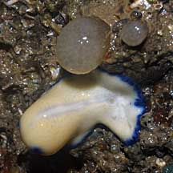 Eating Yellow clustered bead ascidians? Changi, Jun 08 |
 Bigger flatworms may undulate the sides of their bodies to 'swim'. Pulau Semakau, Jan 05 |
| Flatworm babies: Marine flatworms
are hermaphrodites, that is, each flatworm has both male and female
reproductive organs. When two flatworms meet, they exchange sperm.
Some species simply insert their needle-like penis anywhere in the
body of the partner. This is not surprisingly called 'hypodermic impregnation'.
In yet other species, as two flatworms attempt to use each one's penis to stab the other, they appear to be 'penis-fencing'. It is believed that each flatworm tries to impregnate the other without itself being impregnated. In one study, penis fencing was observed to be just a mating ritual and not necessary for insemination, not always aggressive, and could also result in eventual reciprocal insemination. Eggs are laid in a mass attached to a hard surface, in batches of hundreds of eggs. The eggs hatch into free-swimming larvae which disperse and undergo metamorphosis into the adult form. Some like the Blue-lined flatworm and Purple-spotted flatworm displayed long-term parental care. |
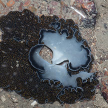 Two worms 'penis fencing'. Beting Bronok, Jun 17 |
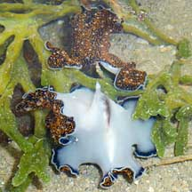 'Penis fencing' Terumbu Berkas, Jan 10 Photo shared by Loh Kok Sheng on his flickr. |
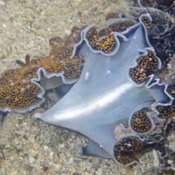 'Penis fencing' Terumbu Bemban, Jun 10 Photo shared by Loh Kok Sheng on his blog. |
| Here's a video clip of 'penis-fencing' shared by Loh Kok Sheng. |
|
Penis fencing in flatworms from Loh Kok Sheng on Vimeo. |
| Fragile worms: Flatworms are
very delicate and tear easily when handled. So please avoid touching
them. Status and threats: None of our flatworms are listed among the threatened animals of Singapore. However, like other creatures of the intertidal zone, flatworms are affected by human activities such as reclamation and pollution. Trampling by careless visitors, and overcollection of their food source can also have an impact on local populations. |
| Unidentified flatworms on Singapore shores |
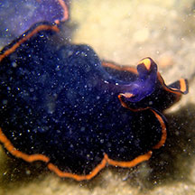 Pseudobiceros hymanae Terumbu Raya, Feb 23 Photo shared by Jianlin Liu on facebook. |
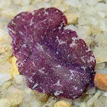 Pseudoceros cf cruentus East Coast Park, Nov 21 Photo shared by Jianlin Liu on facebook. |
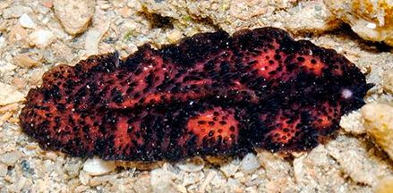 Acanthozoon/Thysanozoon sp. 2 Pulau Hantu, Aug 14 Photo shared by Loh Kok Sheng on his blog. |
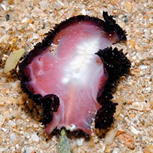 Underside. |
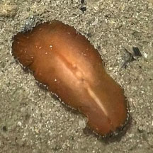 |
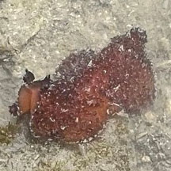 |
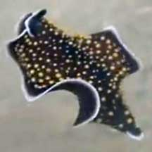 Thysanozoon nigropapillosum Big Sisters Island, Feb 21 Photo shared by Joleen Chan on facebook. |
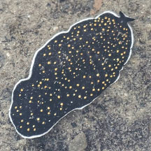 Thysanozoon nigropapillosum Pulau Semakau East, Feb 26 Photo shared by Richard Kuah on facebook. |
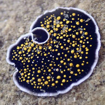 |
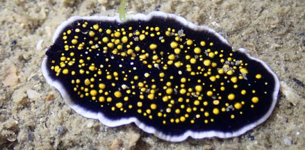 Thysanozoon nigropapillosum Seringat-Kias, Oct 17 Photo shared by Jianlin Liu on facebook. |
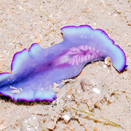 Underside. |
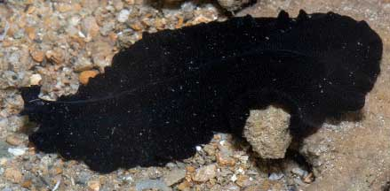 Pseuobiceros bajae (ID by Rene Ong). Terumbu Pempang Laut, Aug 21 Photo shared by Marcus Ng on facebook. |
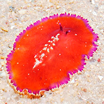 Planocerid 7 Cyrene Reef, Jun 11 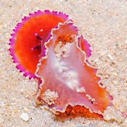 Photo shared by Loh Kok Sheng on his blog. |
| Order
Polycladida recorded for Singapore from Rene S.L. Ong and Samantha J.W. Tong. 29 October 2018. A preliminary checklist and photographic catalogue of polyclad flatworms recorded from Singapore. +Other additions (Singapore Biodiversity Record, etc)
|
| Acknowledgement With grateful thanks to Leslie H. Harris of the Natural History Museum of Los Angeles County for comments on and identifying some of these flatworms. Grateful thanks to Rene Ong for sharing details and identifying the flatworms on this page. Links
|